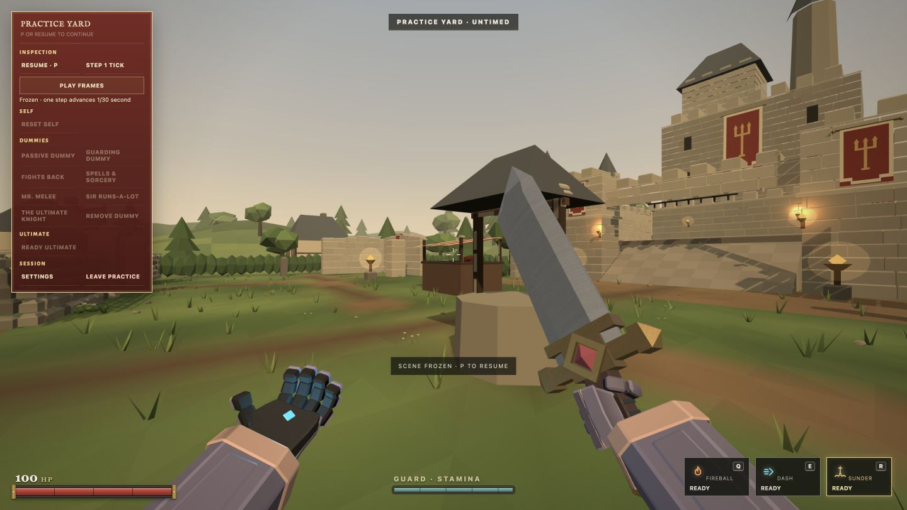
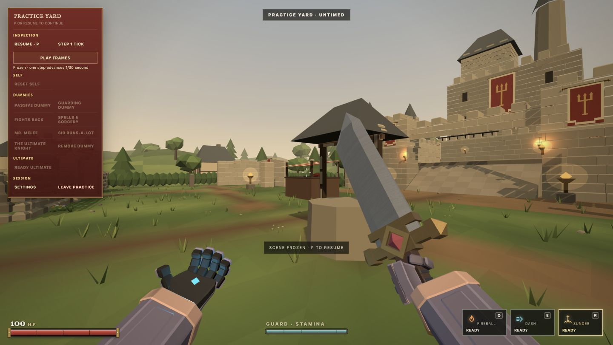
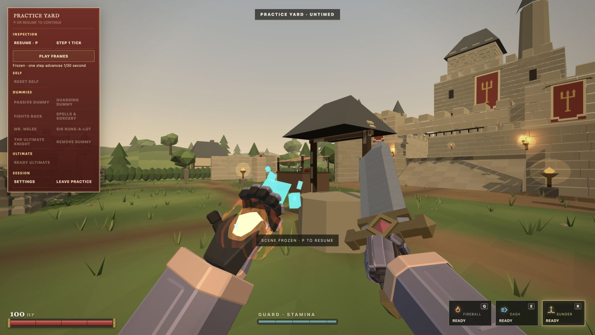
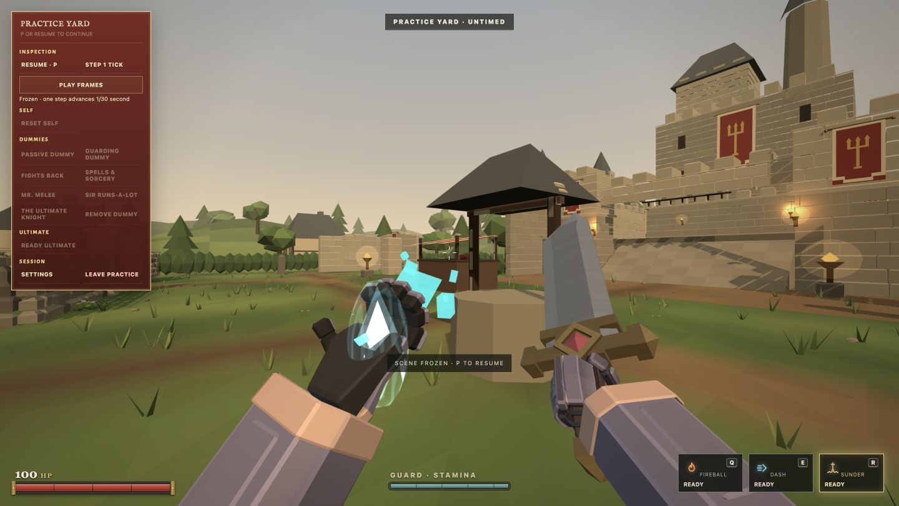
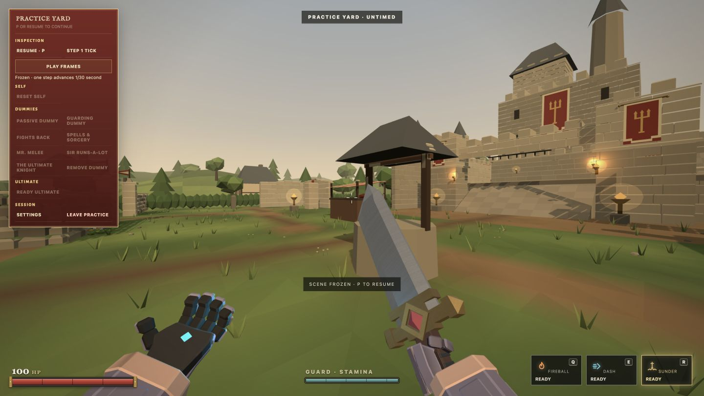
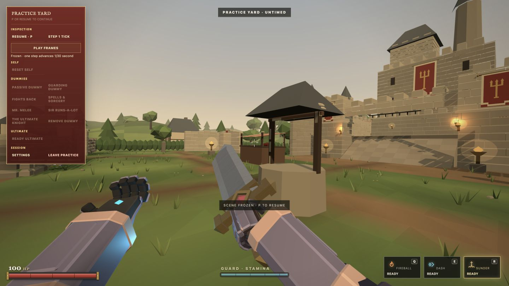

One Spellblade, both perspectives
Both hands, wrist cuffs and forearms share the edited third person construction. These are real game renders. Inspection close views use the same review camera in each candidate.
Before · PR 162 scaffold Previous candidate · PR 164
Previous candidate · PR 164
After · unified arms
Spellcasting, Sprint and second strike
Fireball
Frostfire
Sprint
Second strike